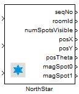

NorthStar

Implements the NorthStar feature on Robotino.
Contents
Block properties
Inputs
- ComId
- roomId - Set the id of the room.
- ceilingCal - Calibration of the ceiling.
Outputs
- sequenceNo - The sequence number.
- roomId - The id of the current room.
- numSpotsVisible - The number of visible spots.
- posX - The current position in x direction.
- posY - The current position in y direction.
- posTheta - The current orientation in radians.
- magSpot0 - The signal strenght of spot 1.
- magSpot1 - The signal strenght of spot 2.